Невід’ємна частина будь-якого свята – це десерт, тому продумати і вирішити, що буде стояти на столі, важливо ще на підготовчому етапі. Кожна господиня замислюється про те, як прикрасити торт на Новий рік в домашніх умовах так, щоб всі гості були в захваті. Також особлива увага приділяється солодкому декору, якщо вдома є діти. Головними героями на святковому торті можуть стати сніговик і прикрашена іграшками ялинка. Детальна інструкція по виготовленню прикрас прийде на допомогу як новачкам, так і досвідченим кондитерам.
Прикрашаємо торт на Новий рік сніговиком з мастики
Використовуючи інструкцію, наведену нижче, буде нескладно декорувати торт з мастики на Новий рік веселими сніговиками. За бажанням можна виготовити одну або декілька фігурок. Неординарно на торті виглядають відразу шість снігових чоловічків з мастики.
Перед тим як виготовити декор на торт на Новий рік своїми руками, придбайте необхідну кількість мастики або приготуйте її самостійно за нашим рецептом. Для одного невеликого сніговика знадобиться цукрова маса таких кольорів:
- біла – 200 г;
- блакитна і бузкова – по 10 г;
- помаранчева і рожева – по 5 г;
- чорна – невелика кількість.
Крім того, вам знадобиться:
- пензлик;
- вода;
- зубочистки.
Крок 1
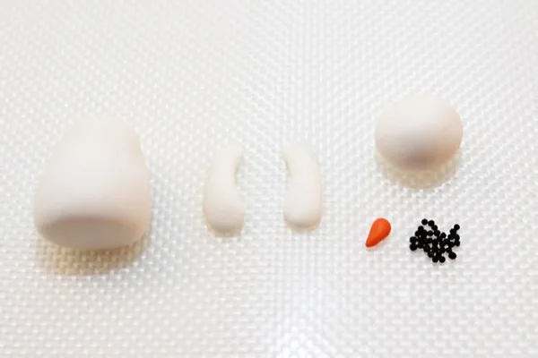
На першому етапі з мастики білого кольору виготовте приплюснутий конус. Потім скачайте дві ковбаски і стисніть їх по краях, створивши руки сніговика. З білої мастики також зробіть голову, скачавши акуратну кулю.
Ніс виготовляється з помаранчевої мастики в формі витягнутого конуса – морквини. Додатково зліпіть очі сніговика і «точки» для його рота – чорні маленькі намистинки. Попередньо зубочисткою в кульці зробіть невеликі заглиблення, куди потім вставте ці деталі, змащені водою.
Порада!
Для роботи з білої мастикою краще використовувати рукавички, так як на ній добре видно найменші забруднення.
Крок 2
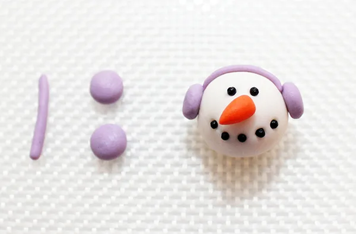
Торт з мастикою на Новий рік буде виглядати особливо святково, якщо у сніговика будуть оригінальні навушники. Для них скачайте з бузкової мастики тонку паличку і два маленьких кола. За допомогою пензлика і води прикріпіть елементи зверху і з боків до голови чоловічка, щоб у нього з’явилися навушники.
Крок 3
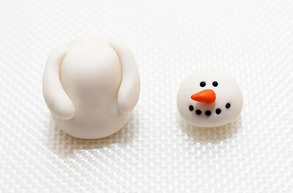
З’єднайте воєдино елементи тулуба сніговика. Перед тим як прикрасити торт в домашніх умовах на Новий рік незвичайною фігуркою, візьміть пензлик і воду. Щоб приєднати руки до тулуба сніговика, змочіть верхню частину овалу.
Крок 4
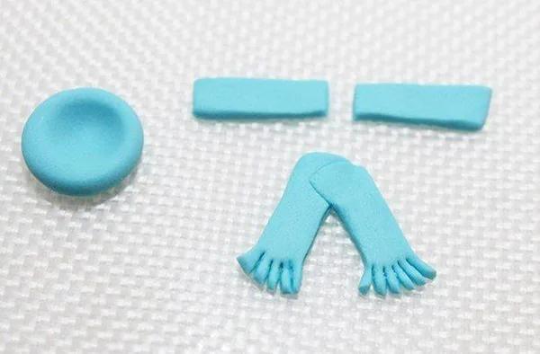
А з блакиті мастики скачайте дві акуратні смужки і внизу ножем зробіть надрізи ‒ «бахрому», необхідну для оформлення шарфа. Потім скачайте тонке плоске коло, і пальцем примніть його посередині, щоб вийшло акуратне поглиблення.
Крок 5
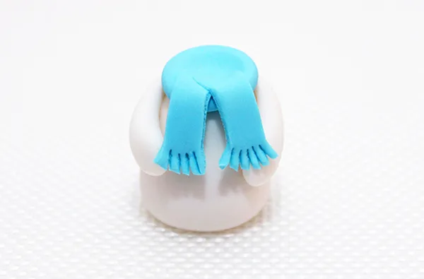
Доповніть новорічну прикрасу, приєднавши шарфик до тулуба. Зробити це потрібно до прикріплення голови. Змочіть пензлик водою і змастіть плоске блакитне коло, яке прикріпіть до верхньої частини тулуба. Потім на диск покладіть дві блакитні смужки, змащені водою, щоб доробити шарфик.
Крок 6
На завершальному етапі прикріпіть голову до тулуба, щоб зібрати всю фігуру. Для цього вставте в «тіло» зубочистку. Встановіть прикрасу на торт, обтягнутий мастикою. Вона буде краще триматися, якщо насадити її на зубочистку.
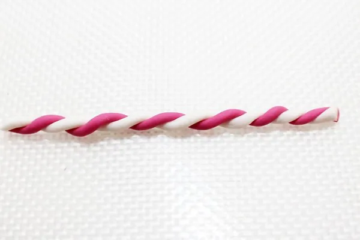
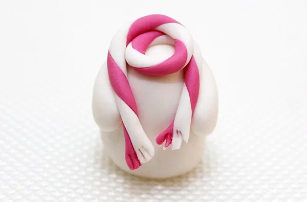
Якщо ви не знаєте, як прикрасити торт на Новий рік з мастики в незвичний спосіб, то виготовте одразу кілька сніговиків. Прикрасити іншу фігуру можна різнобарвним шарфом. Достатньо приготувати шматочки рожевої і білої мастики, скачати смужки і скрутити їх разом. Приклейте деталь до верхньої частини тулуба також за допомогою пензлика і води. Одного сніговика можна прикрасити навушниками і однотонним шарфом, а іншого – незвичайним смугастим шарфом.
Порада!
Якщо фігурки недостатньо блищать і на них з’явився білястий наліт через крохмаль або цукрову пудру, змастіть їх алкоголем. Він швидко випарується, тому на смак це не вплине, зате наліт зникне безслідно.
Варіанти оформлення
{kind=link}
{kind=link}
{kind=link}
{kind=link}
{kind=link}
{kind=link}
{kind=link}
{kind=link}
{kind=link}
{kind=link}
{kind=link}
{kind=link}
{kind=link}
{kind=link}

{kind=link}
{kind=link}

Ще декілька цікавих варіантів ліплення сніговиків можна побачити на відео:
Прикрашаємо торт ялинкою з мастики
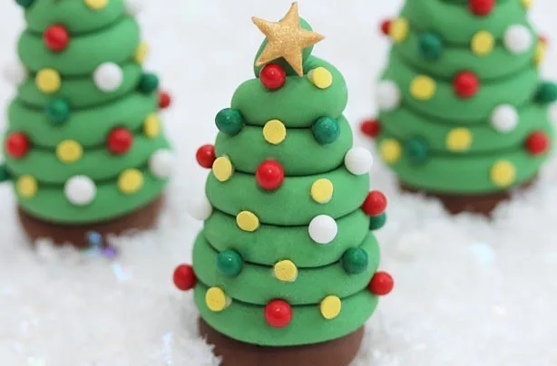
Вдала ідея – доповнити новорічні солодощі дуже простою фігуркою ялинки. По-святковому прикрашене деревце на торті обов’язково порадує гостей. Особливо оригінально виглядає ансамбль з декількох ялинок. Зрозуміти, як прикрасити торт на Новий рік, фото з інструкцією допоможе найкраще за все.
Перед тим як приступити до прикрашання торта на свято, підготуйте:
- мастику зеленого кольору – 300 г;
- коричневого – 50 г.
Також візьміть:
- кандурин;
- харчовий клей (можна замінити простою водою або яєчним білком);
- пензлик;
- форма у вигляді зірки.
Прикрасьте дерево новорічними іграшками. Їх легко виготовити вдома з присипки або різнокольорових шматочків мастики.
Крок 1
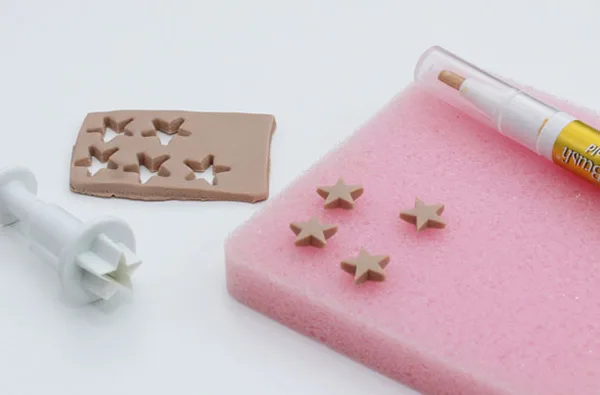
Спочатку з пласту мастики шоколадного кольору виріжте акуратний прямокутник. Потім формою у вигляді зірки виріжте необхідну кількість фігурок. Ці зірочки будуть знаходитися нагорі у кожної ялинки. Покрийте їх кандурином або використовуйте так.
Крок 2
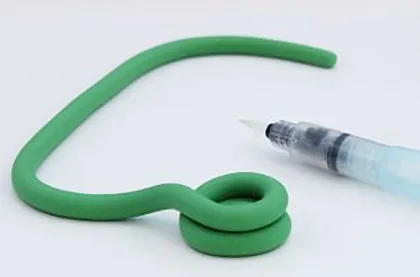
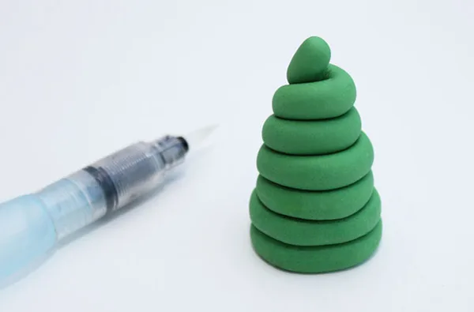
Мастику зеленого кольору розділіть на 6 шматків. З кожного скачайте кульку, а потім – довгасту ковбаску. Ялинка вийде, якщо скласти одну таку ковбаску у вигляді акуратного конуса. Щоб з’єднати всі шари, використовуйте харчовий клей і пензлик.
Якщо ви хочете зробити ялинку більшого розміру, зліпіть спочатку із зеленої мастики конус потрібного розміру, а потім обкрутіть його ковбаскою.
Крок 3
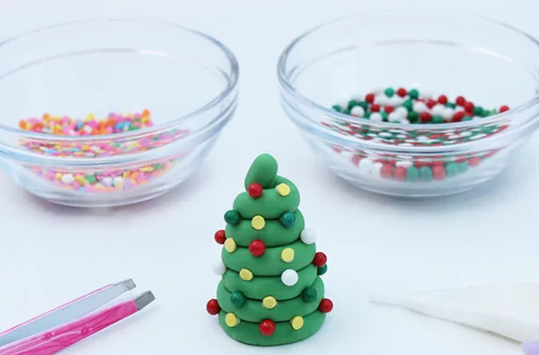
На останньому етапі прикрасьте ялинку іграшками. Використайте різнокольорову присипку або мастику. У іншому випадку скачайте багато плоских дисків з цукрової пасти різних відтінків. Прикріпіть «іграшки» харчовим клеєм.
Крок 4
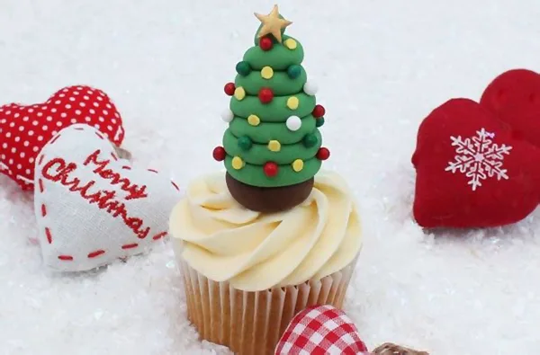
Приклейте золоті зірочки до верхівок ялинок, змастивши водою. Тепер прикрашаємо торт на Новий рік отриманими фігурками. Можна не кріпити їх на зубочистку, якщо ви не будете перевозити десерт, так як вони виходять досить стійкими завдяки своїй формі.
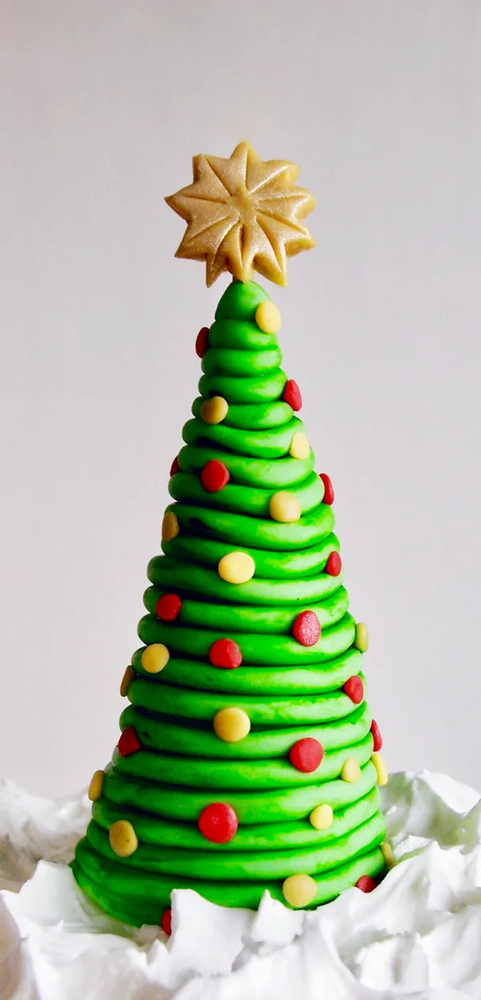
Порада!
Спробуйте декорувати такими ялинками капкейки – вийде дуже оригінально. На торт краще поставити фігурки по колу або в довільному порядку. Можна зробити їх різного розміру для асиметрії.
Ще один спосіб, як зліпити просту ялинку, на відео:
Створення таких новорічних прикрас з мастики займе зовсім небагато часу. До того ж що може бути кращим за приготування домашнього натурального тортика і солодких прикрас своїми руками? Ви зможете насолодитися безпечним і смачним продуктом, що особливо важливо, якщо дегустатори – діти. Новорічний торт стане справжньою перлиною святкового столу.